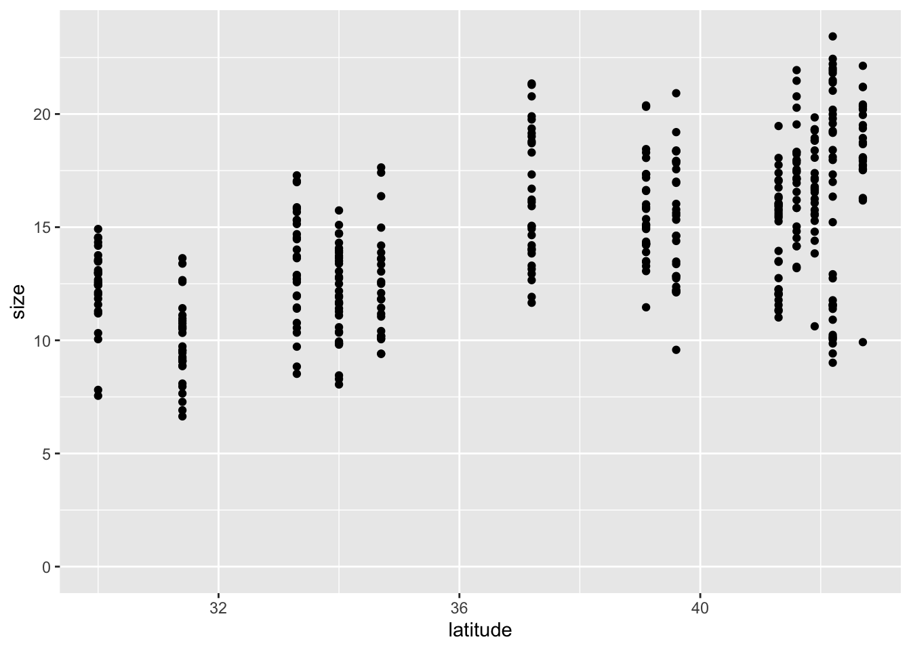
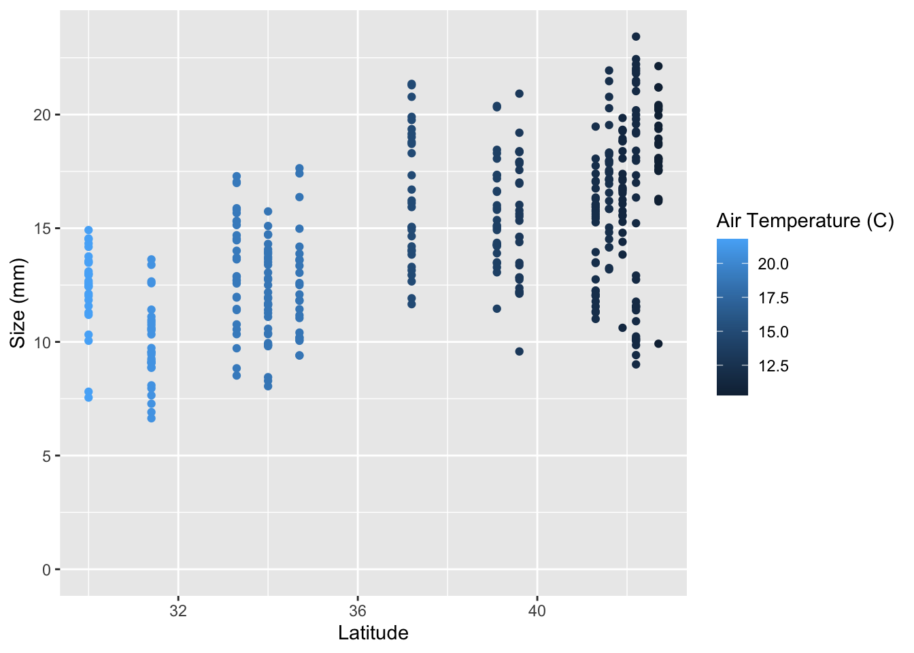
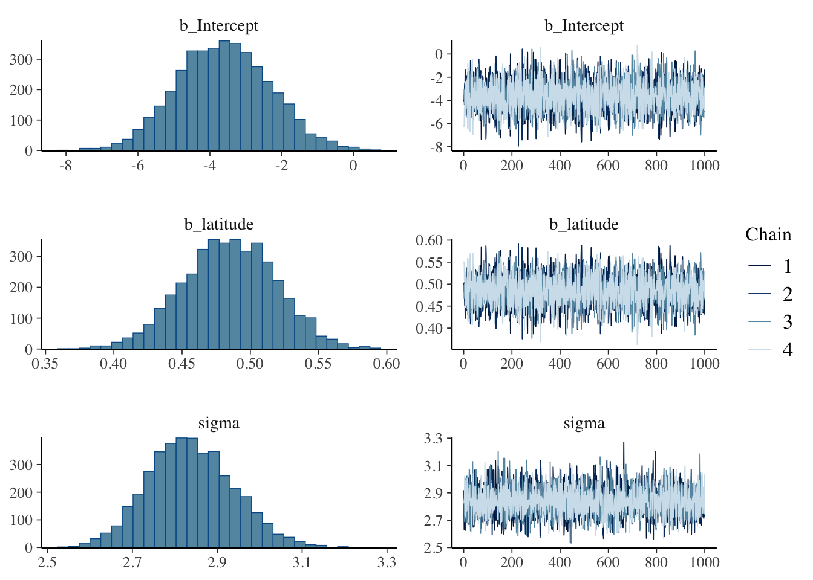
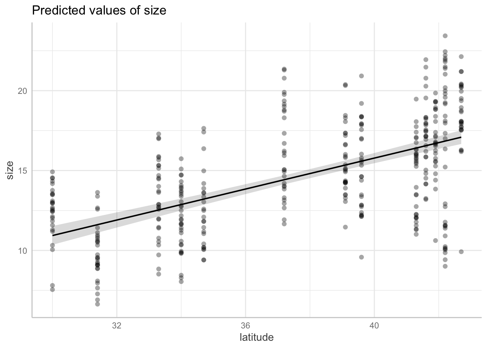
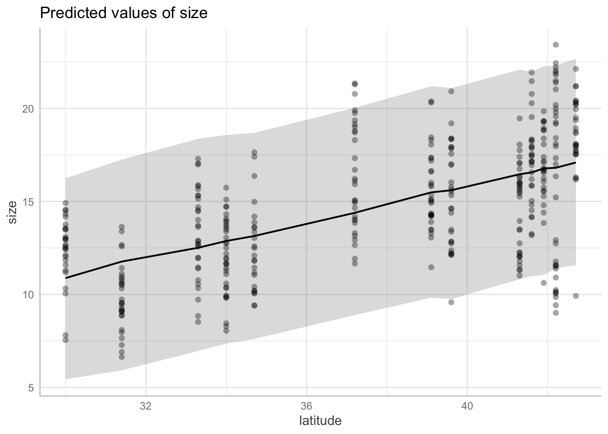
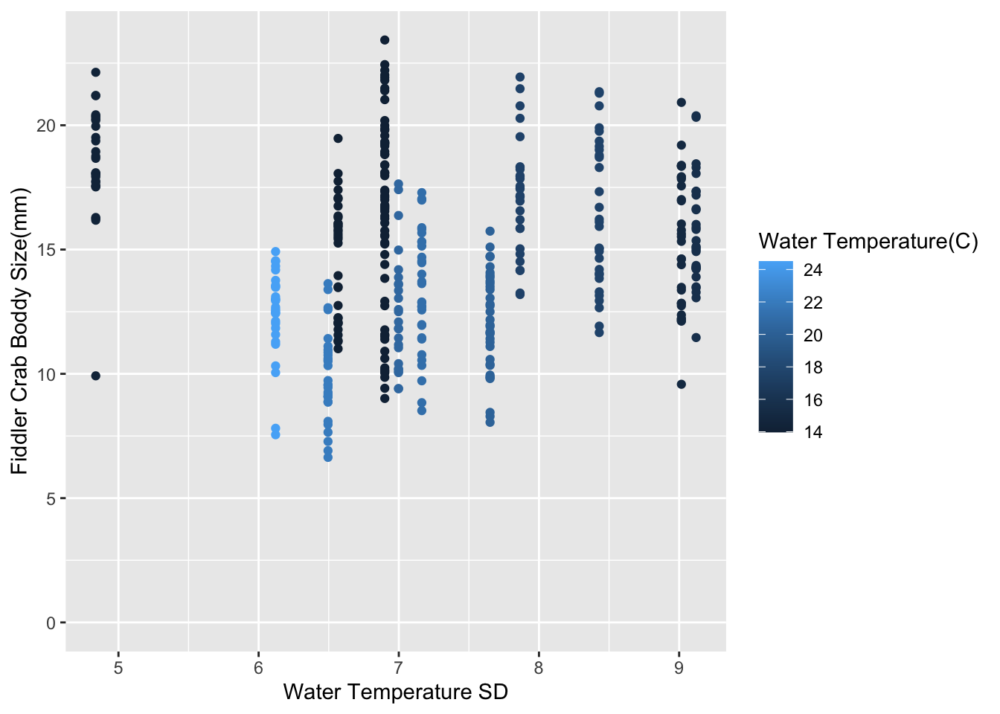
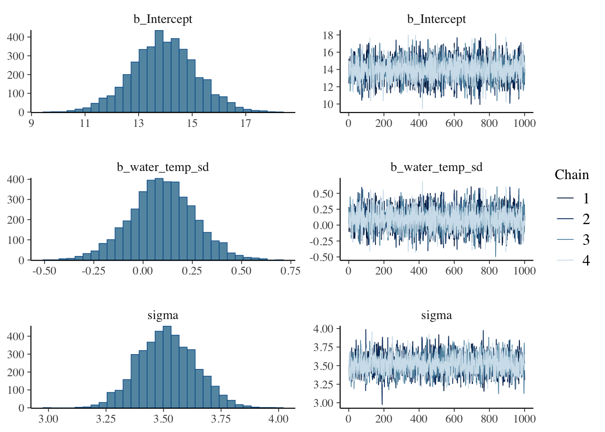
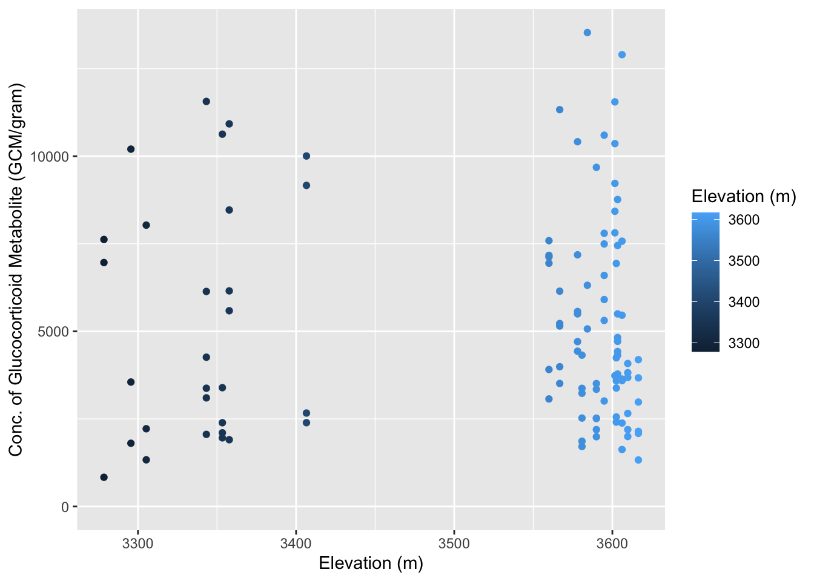
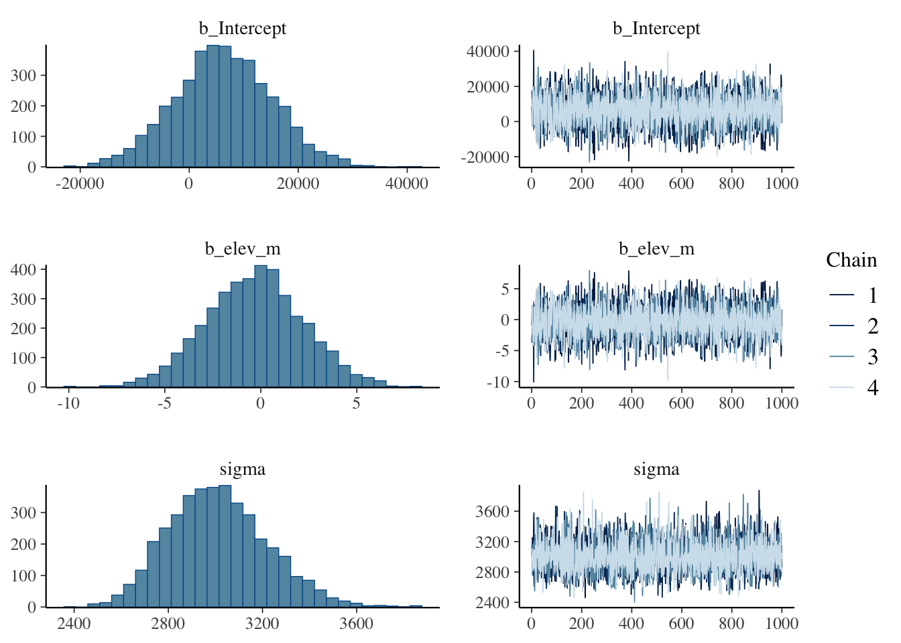
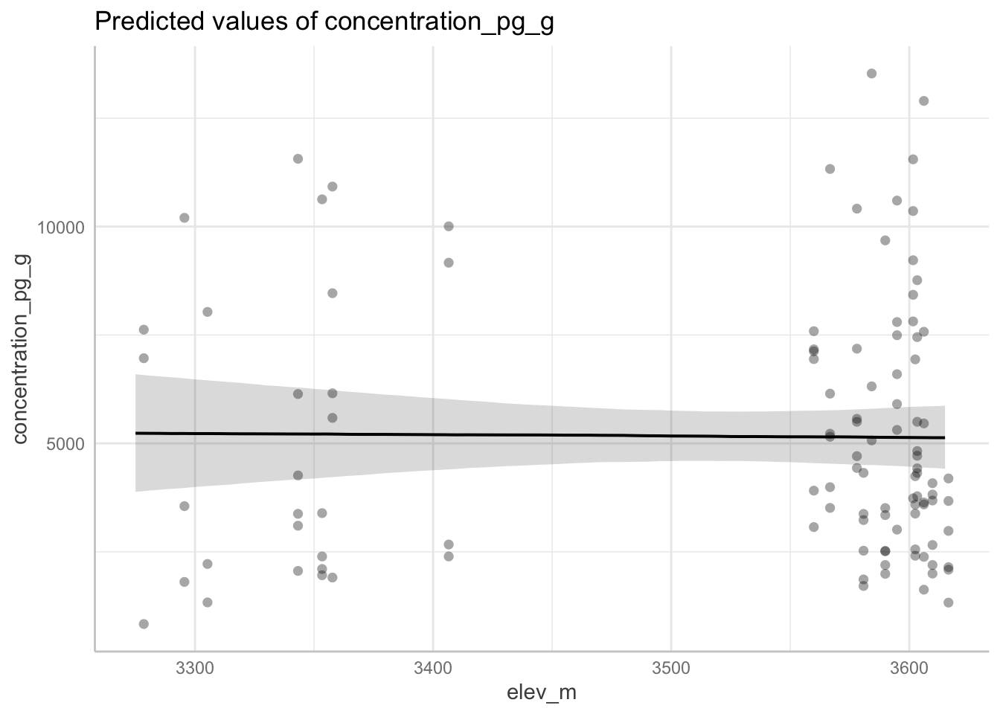

Loading 'brms' package (version 2.23.0). Useful instructions
can be found by typing help('brms'). A more detailed introduction
to the package is available through vignette('brms_overview').
Attaching package: 'brms'
The following object is masked from 'package:stats':
ar
library(tidyverse)
Warning: package 'tibble' was built under R version 4.5.2
── Conflicts ────────────────────────────────────────── tidyverse_conflicts() ──
✖ dplyr::filter() masks stats::filter()
✖ dplyr::lag() masks stats::lag()
ℹ Use the conflicted package (<http://conflicted.r-lib.org/>) to force all conflicts to become errors
library(ggeffects) # for the prediction plot
Warning: package 'ggeffects' was built under R version 4.5.2
#Loading ggplot package and lopading librarylibrary(ggplot2)pie_crab %>%ggplot(aes(x = latitude, y = size)) +geom_point() +# Make the y-axis include 0ylim(0, NA)

Q1.1
Yes there does appear to be a linear positive trend where as latitude increase size does as well. There seems to be a lot of variation, but does follow a gradual increase. We do not feel very confident, but we do believe there is a trend, but whether it is significant we are not entirely sure.
Q1.2
library(ggplot2)pie_crab %>%ggplot(aes(x = latitude, y = size, color = air_temp)) +geom_point() +# Make the y-axis include 0ylim(0, NA) +labs(x ="Latitude", y ="Size (mm)", color ="Air Temperature (C)")

Now that you’ve spent some time pondering the data, let’s put together our first model. From lecture, linear models follow the equation:
\(y = intercept + slope*x\)
Let’s set up our model to look like:
\(size = intercept + slope*latitude\)
1.2 Fit linear regression with brms
Time to run the model! We will be using the brm() function. There’s a lot here, so let’s dig in line-by-line:
# latitude modelm.crab.lat <-brm(data = pie_crab, # Give the model the pie_crab data# Choose a gaussian (normal) distributionfamily = gaussian,# Specify the model here. size ~ latitude,# Here's where you specify parameters for executing the Markov chains# We're using similar to the defaults, except we set cores to 4 so the analysis runs faster than the default of 1iter =2000, warmup =1000, chains =4, cores =4,# Setting the "seed" determines which random numbers will get sampled.# In this case, it makes the randomness of the Markov chain runs reproducible # (so that both of us get the exact same results when running the model)seed =4,# Save the fitted model object as output - helpful for reloading in the output laterfile ="output/m.crab.lat")
Q1.3 What does the “iter” argument do?
Q1.3: The iter argument specifies how many time the model will sample the posterier distribution.In other words the total number of iterations per chain.
Navigate to the brm help page to answer: What does the iter = argument do?
1.3 Assess model
First, we need to assess whether or not our model actually ran correctly. Let’s print a summary of the model output:
summary(m.crab.lat)
Family: gaussian
Links: mu = identity
Formula: size ~ latitude
Data: pie_crab (Number of observations: 392)
Draws: 4 chains, each with iter = 2000; warmup = 1000; thin = 1;
total post-warmup draws = 4000
Regression Coefficients:
Estimate Est.Error l-95% CI u-95% CI Rhat Bulk_ESS Tail_ESS
Intercept -3.61 1.30 -6.09 -1.01 1.00 4116 3192
latitude 0.48 0.03 0.42 0.55 1.00 4108 3140
Further Distributional Parameters:
Estimate Est.Error l-95% CI u-95% CI Rhat Bulk_ESS Tail_ESS
sigma 2.84 0.10 2.65 3.04 1.00 3758 2852
Draws were sampled using sampling(NUTS). For each parameter, Bulk_ESS
and Tail_ESS are effective sample size measures, and Rhat is the potential
scale reduction factor on split chains (at convergence, Rhat = 1).
We do this in part by looking at the Rhat (R hat) column, which should be very close to 1. If you remember from lecture, this model runs multiple chains that converge on estimates for the slope and the intercept. An R hat of 1 tells us that those four chains converged on the same estimate. This looks fine for us!
Let’s also look at the chains and the “posterior distributions” in a graph.
plot(m.crab.lat) # show posteriors and chains

We’re looking for three things:
Are the posterior samples on the left each a smooth distribution, with one clean peak, or do they have multiple clear peaks? The latter is a bad sign. They look good in this case.
Are the four chains on the overlapping each other, or are they clearly separate? The latter is a bad sign. We again look good in this case.
Are the four chains flat, or is there a clear trend up or down? The latter is a bad sign. We again look good in this case.
If we fail any of these tests, we would want to try running the MCMC chain with more iterations. We may also need to think hard about whether our model is correctly designed.
1.4 Interpret model
Now that we feel good that the model fit correctly, let’s look at a summary table of our model’s output.
summary(m.crab.lat)
Family: gaussian
Links: mu = identity
Formula: size ~ latitude
Data: pie_crab (Number of observations: 392)
Draws: 4 chains, each with iter = 2000; warmup = 1000; thin = 1;
total post-warmup draws = 4000
Regression Coefficients:
Estimate Est.Error l-95% CI u-95% CI Rhat Bulk_ESS Tail_ESS
Intercept -3.61 1.30 -6.09 -1.01 1.00 4116 3192
latitude 0.48 0.03 0.42 0.55 1.00 4108 3140
Further Distributional Parameters:
Estimate Est.Error l-95% CI u-95% CI Rhat Bulk_ESS Tail_ESS
sigma 2.84 0.10 2.65 3.04 1.00 3758 2852
Draws were sampled using sampling(NUTS). For each parameter, Bulk_ESS
and Tail_ESS are effective sample size measures, and Rhat is the potential
scale reduction factor on split chains (at convergence, Rhat = 1).
The output reminds us of our model formula that we chose (size ~ latitude). Most important to answering our question are the parameter estimates in the estimate column. Remember, our model was \(size = intercept + slope*latitude\). The slope parameter is going to tell us what the effect of latitude is. For every one unit change of latitude, what is the effect on size? We need to translate that interpretation to the units that those variables represent: the slope value is thus for every one degree of latitude, carapace size changes this much in millimeters.
Looking at our table, we see the estimate for latitude is 0.48: This indicates that the model estimated that for every 1 degree latitude, carapace width increases by 0.48 mm.
Earlier you were asked to “describe how confident you are in this interpretation” when qualitatively interpreting the graph of size vs latitude. Now, let’s answer this quantitatively by examining how much confidence the model has in the size-latitude association. Are only positive (non-zero) slopes compatible with the data? Or would a flat (slope of zero) association also be compatible? If a slope of zero is compatible with the data, then we can’t really say that our predictor (latitude) has any effect on our response (size).
To assess this, we can look at the lower and upper 95% Credible Interval columns (l-95% CI and u-95% CI, respectively) and see if that interval range intersects with zero. We can see that our slope estimate (the estimate of latitude) ranges from 0.42 to 0.55 - zero is not included in this range. Therefore, we can reasonably conclude here that, given our model, the effect of latitude on body size has a 95% chance of being between those values, and importantly, NOT zero!
In the results section of a paper, we would write something along these lines:
We found that crab size increased with latitude, with an increase of 0.48mm of carapace width per 1 degree of latitude. Our 95% credible intervals were between 0.42 and 0.55 mm/degree, suggesting that given our model, the effect of latitude on carapace width is different from zero.
Bonus
Let’s calculate the probability of a zero slope! The MCMC chains are big columns of samples from the posterior distribution, so we can add up the proportion of slope estimates that are zero or lower.
as_draws_df(m.crab.lat) %>%# extract the posterior samples from the model estimateselect(b_latitude) %>%# pull out the latitude samples from all 4 chains. we'll get a warning that we can ignore.summarize(p_slope_lessthanorequalto_zero =sum(b_latitude <=0)/length(b_latitude))
Warning: Dropping 'draws_df' class as required metadata was removed.
# A tibble: 1 × 1
p_slope_lessthanorequalto_zero
<dbl>
1 0
Ok! The model reports a zero chance of a slope less than or equal to zero. Feel free to try other thresholds to explore (e.g., what’s the probability the slope is greater than 0.5 mm per degree latitude?).
1.5 Plot model on the data
Here we are going to plot the data and the model output in two different ways:
**Compatibility interval** shows uncertainty in the average response (the estimate for the slope)
**Prediction interval** shows uncertainty in the data around the average response (the estimate for the slope)
# compatibility interval. the shows uncertainty in the average response.confm.crab.lat <-predict_response(m.crab.lat)plot(confm.crab.lat, show_data =TRUE) # shows variation in the average.
Data points may overlap. Use the `jitter` argument to add some amount of
random variation to the location of data points and avoid overplotting.

# prediction interval. this shows uncertainty in the data around the average response.confm.crab.lat <-predict_response(m.crab.lat, interval ='prediction')plot(confm.crab.lat, show_data =TRUE) # shows 95% confidence interval of points
Data points may overlap. Use the `jitter` argument to add some amount of
random variation to the location of data points and avoid overplotting.

1.6 Repeat with a new variable: water temp sd
Let’s repeat this example with a new variable: the water temperature standard deviation, water_temp_sd. The standard deviation (sd) can be used as a metric of variability: higher sd means higher variability. We can ask: is higher variability in water temperature associated with fiddler crab body size?
Q1.4 Make a hypothesis
Before you look at the data, what direction of an effect do you expect? Do you think higher variability would be associated with larger or smaller crabs? Why? Please write 1-2 sentences.
Q1.4:
We predict that higher variability would be associated with larger crabs. Because generally we see larger species of crab in colder environments that experience more disturbance.
Q1.5 Graph the data
library(ggplot2)pie_crab %>%ggplot(aes(x = water_temp_sd, y = size, color = water_temp)) +geom_point() +# Make the y-axis include 0ylim(0, NA) +labs(x ="Water Temperature SD", y ="Fiddler Crab Boddy Size(mm)", color ="Water Temperature(C)")

Q1.6 Interpret the graph
Does it look like size changes with the sd of water temperature? Describe how confident you are in this interpretation.
Q1.6:
No, it does not look like size changes with standard deviation of water temperature. I feel very confident that there’s not pattern to distinguish amongst the data.
Q1.7 Set up and run this new model
We’ll set up our model to look like:
\(size = intercept + slope*watertempsd\)
Keep all of the output the same except for the parts where you specify 1) the model formula and 2) the file = output. Name this new model m.crab.watersd to distinguish it from the latitude model.
# latitude modelm.crab.watersd <-brm(data = pie_crab, # Give the model the pie_crab data# Choose a gaussian (normal) distributionfamily = gaussian,# Specify the model here. size ~ water_temp_sd,# Here's where you specify parameters for executing the Markov chains# We're using similar to the defaults, except we set cores to 4 so the analysis runs faster than the default of 1iter =2000, warmup =1000, chains =4, cores =4,# Setting the "seed" determines which random numbers will get sampled.# In this case, it makes the randomness of the Markov chain runs reproducible # (so that both of us get the exact same results when running the model)seed =4,# Save the fitted model object as output - helpful for reloading in the output laterfile ="output/m.crab.watersd")
Q1.8 Assess the model
Assess whether the model ran correctly by looking at R hat, the chains, and the posterior distributions using the plot() and summary() functions as below. Describe your thought process about whether the model ran correctly in 1-2 sentences.
# show posteriors and chainsplot(m.crab.watersd)

# show summary, including rhatsummary(m.crab.watersd)
Family: gaussian
Links: mu = identity
Formula: size ~ water_temp_sd
Data: pie_crab (Number of observations: 392)
Draws: 4 chains, each with iter = 2000; warmup = 1000; thin = 1;
total post-warmup draws = 4000
Regression Coefficients:
Estimate Est.Error l-95% CI u-95% CI Rhat Bulk_ESS Tail_ESS
Intercept 13.95 1.21 11.54 16.36 1.00 4569 2971
water_temp_sd 0.10 0.16 -0.23 0.42 1.00 4615 2950
Further Distributional Parameters:
Estimate Est.Error l-95% CI u-95% CI Rhat Bulk_ESS Tail_ESS
sigma 3.52 0.13 3.28 3.76 1.00 3960 2894
Draws were sampled using sampling(NUTS). For each parameter, Bulk_ESS
and Tail_ESS are effective sample size measures, and Rhat is the potential
scale reduction factor on split chains (at convergence, Rhat = 1).
Q1.8:
Since the Rhat value is equal to 1 and all of the chains (1-4) line up in a straight line across the graph, we feel confident that the model ran correctly.
Q1.9 Interpret the model
Based on the summary output, interpret your model by answering:
What is the effect of your predictor? This information is in the estimate column to the right of your predictor water_temp_sd. Remember to describe the effect using the units to make it biologically meaningful.
Is the effect reasonably different from zero? In other words, does the confidence interval intersect with zero?
Q1.9
Q1.9:
The effect of the predictor variable is 0.10, meaning for every one unit of water temperature standard deviation, there was an increase of 0.10mm in fiddler crab body size.
No, the effect is not reasonably different from zero because the credible interval (-0.23 - 0.42) intersects with zero. Therefore this tells us that given the model, there is a possibility that the predictor ( standard deviation of water temperature) could have no effect on fiddler crab body size.
# Show model outputsummary(m.crab.watersd)
This is a situation where our predictor variable, water_temp_sd, does not seem to have an effect on the body size of crabs. We would say something along the lines of: We found an increase of 0.10mm of carapace width per 1 unit of the standard deviation of water temperature, but our 95% credible intervals included zero (-0.20 to 0.40), suggesting that given our model, the effect of water temperature standard deviation on carapace width is not different from zero.
2. Back to Pikas!
adultPikaNiwotRidge_SaraMcLaughlin
We can’t stay away from the cute pikas for too long! In this section you will apply the statistical thinking you’ve learned to the pika dataset in one of two ways: you will try and see whether or not the stress of pikas is explained by either 1) elevation or 2) day of year.
Let’s look at the data again
head(nwt_pikas)
# A tibble: 6 × 8
date site station utm_easting utm_northing sex concentration_pg_g
<date> <fct> <fct> <dbl> <dbl> <fct> <dbl>
1 2018-06-08 Cable Ga… Cable … 451373 4432963 male 11563.
2 2018-06-08 Cable Ga… Cable … 451411 4432985 male 10629.
3 2018-06-08 Cable Ga… Cable … 451462 4432991 male 10924.
4 2018-06-13 West Kno… West K… 449317 4434093 male 10414.
5 2018-06-13 West Kno… West K… 449342 4434141 male 13531.
6 2018-06-13 West Kno… West K… 449323 4434273 <NA> 7799.
# ℹ 1 more variable: elev_m <dbl>
Date is one of the columns, but we specifically want “day of year” as a metric to quantify how late in the season it is. This also allows us to interpret our model’s output a little more informatively.
We can extract day of year using the lubridate package (within tidyverse), which is all about working with dates and times:
# Extracting Day from the date and makint it its own column.nwt_pikas_doy <- nwt_pikas %>%# Add a new column called day_of_year# yday extracts the day of year from the date columnmutate(day_of_year =yday(date)) %>%# relocate the day_of_year column after the date columnrelocate(day_of_year, .after = date)head(nwt_pikas_doy)
# A tibble: 6 × 9
date day_of_year site station utm_easting utm_northing sex
<date> <dbl> <fct> <fct> <dbl> <dbl> <fct>
1 2018-06-08 159 Cable Gate Cable Gate 1 451373 4432963 male
2 2018-06-08 159 Cable Gate Cable Gate 2 451411 4432985 male
3 2018-06-08 159 Cable Gate Cable Gate 3 451462 4432991 male
4 2018-06-13 164 West Knoll West Knoll 3 449317 4434093 male
5 2018-06-13 164 West Knoll West Knoll 4 449342 4434141 male
6 2018-06-13 164 West Knoll West Knoll 5 449323 4434273 <NA>
# ℹ 2 more variables: concentration_pg_g <dbl>, elev_m <dbl>
# Tidying the data set further in order to create a graph we can use to visualize any kind of pattern.nwt_pikas_categ <- nwt_pikas %>%# naming output of this code# Call the new column stress_categorymutate(stress_category =case_when(# When the value is > 5000, make the new column's value "Stressed!!!!"concentration_pg_g >5000~"Stressed",# Otherwise, make the new column's value "Chill".default ="Chill"))
Now it’s time to choose! In this section, choose between explaining the stress variable as a function of either day of year or elevation. If you have extra time at the end and would like more practice, you may optionally repeat the analysis on the other variable as well.
Q2.1 Make a question
Clearly articulate the question that you want to ask in one sentence.
Q2.1:
Is the variation in elevations associated with the stress of pikas?
Q2.2 Make a hypothesis
Before you look at the data, what direction of an effect do you expect? Do you think a larger value of the predictor you chose would be associated with more or less stressed pikas? Why? Please write 1-2 sentences.
Q2.2:
We predict that higher elevations will be associated with higher stress levels in pika. Because generally, the environment at higher elevations are more unforgiving due to limited resource availability, such as plants which is the pikas main source of food, because not many plants are able to survive at such high elevations, as well as more limited land resources, so there are fewer viable territories available for pikas to choose from, leading to more conflict amongst individuals.
Q2.3 Graph the data
As before, your response variable (stress, which is measured as concentration_pg_g) should be on the y-axis, with your predictor variable on the x.
head(nwt_pikas_categ) # checking column names
# A tibble: 6 × 9
date site station utm_easting utm_northing sex concentration_pg_g
<date> <fct> <fct> <dbl> <dbl> <fct> <dbl>
1 2018-06-08 Cable Ga… Cable … 451373 4432963 male 11563.
2 2018-06-08 Cable Ga… Cable … 451411 4432985 male 10629.
3 2018-06-08 Cable Ga… Cable … 451462 4432991 male 10924.
4 2018-06-13 West Kno… West K… 449317 4434093 male 10414.
5 2018-06-13 West Kno… West K… 449342 4434141 male 13531.
6 2018-06-13 West Kno… West K… 449323 4434273 <NA> 7799.
# ℹ 2 more variables: elev_m <dbl>, stress_category <chr>
Q2.3:
library(ggplot2)pika_stress_Plot1 <-ggplot(data = nwt_pikas_categ, aes(x = elev_m, y = concentration_pg_g, color = )) +geom_point(aes(color=elev_m)) +# Make the y-axis include 0ylim(0, NA) +labs(x ="Elevation (m)", y ="Conc. of Glucocorticoid Metabolite (GCM/gram)", color ="Elevation (m)")pika_stress_Plot1

We found an increase of 0.10mm of carapace width per 1 unit of the standard deviation of water temperature, but our 95% credible intervals included zero (-0.20 to 0.40), suggesting that given our model, the effect of water temperature standard deviation on carapace width is not different from zero.
Q2.4 Set up and run a model
Make sure you store your model output as something informative to you.
Q2.4:
We stored output in a new dataframe called “nwt_pika_elev_stress.”
# Elevation and pika stress model nwt_pikas_elev_stress <-brm(data = nwt_pikas_categ, # Give the model tidied pika data.frame# Chose a gaussian (normal) distributionfamily = gaussian,# Specified model. concentration_pg_g ~ elev_m,# Here's where you specify parameters for executing the Markov chains# We're using similar to the defaults, except we set cores to 4 so the analysis runs faster than the default of 1iter =2000, warmup =1000, chains =4, cores =4,# Setting the "seed" determines which random numbers will get sampled.# In this case, it makes the randomness of the Markov chain runs reproducible # (so that both of us get the exact same results when running the model)seed =4,# Save the fitted model object as output - helpful for reloading in the output laterfile ="output/nwt_pikas_elev_stress")
We found an increase of 0.10mm of carapace width per 1 unit of the standard deviation of water temperature, but our 95% credible intervals included zero (-0.20 to 0.40), suggesting that given our model, the effect of water temperature standard deviation on carapace width is not different from zero.
Q2.5 Assess the model
Assess whether the model ran correctly by looking at R hat, the chains, and the posterior distributions. Describe your thought process about whether the model ran correctly in 1-2 sentences.
Q2.5:
We are confident that our model ran correctly because our Rhat value was equal to 1, and the 4 chains all lined up with eachother and ran in a horizontal line across the graph.
# show posteriors and 4 chains plot(nwt_pikas_elev_stress)

# show summary, including Rhatsummary(nwt_pikas_elev_stress)
Family: gaussian
Links: mu = identity
Formula: concentration_pg_g ~ elev_m
Data: nwt_pikas_categ (Number of observations: 109)
Draws: 4 chains, each with iter = 2000; warmup = 1000; thin = 1;
total post-warmup draws = 4000
Regression Coefficients:
Estimate Est.Error l-95% CI u-95% CI Rhat Bulk_ESS Tail_ESS
Intercept 6274.92 8927.98 -11361.19 23720.60 1.00 3832 2607
elev_m -0.31 2.53 -5.25 4.69 1.00 3830 2635
Further Distributional Parameters:
Estimate Est.Error l-95% CI u-95% CI Rhat Bulk_ESS Tail_ESS
sigma 3011.79 209.67 2641.09 3445.75 1.00 4000 2896
Draws were sampled using sampling(NUTS). For each parameter, Bulk_ESS
and Tail_ESS are effective sample size measures, and Rhat is the potential
scale reduction factor on split chains (at convergence, Rhat = 1).
Q2.6 Interpret the model
Interpret your model by answering:
What is the effect of your predictor? Remember to describe the effect using the units to make it biologically meaningful.
Is the effect reasonably different from zero? How do you know?
Q2.6:
We found that there is a decrease of 0.31 GCM/gram of Glucocorticoid Metabolite per unit of elevation. However, our 95% credible intervals (-5.25 to 4.69) includes zero. Therefore given the model, it is possible that the effects of elevation(m) on the stress levels of pika is 0.
Q2.7 Plot the model on the data
Plot either a compatibility interval or prediction interval on the data; specify which you are using.
# compatibility interval for pika stress and elevation. Shows uncertainty in the average response.confm.pikas.elev.stress <-predict_response(nwt_pikas_elev_stress)plot(confm.pikas.elev.stress, show_data =TRUE) # shows variation in the average.
Data points may overlap. Use the `jitter` argument to add some amount of
random variation to the location of data points and avoid overplotting.

Q2.8 Write a small results paragraph
Including the information from Q2.6, write 2-3 sentences as if you were writing the results section of a scientific paper. Include a conclusion sentence that summarizes your finding.
Q2.8:
Despite the estimate showing a decrease of 0.31 GCM/grams of Glucocorticoid Metabolite in pika fecal samplers per unit of elevation. With the 95% credible interval (-5.25 to 4.69) containing 0 within its bounds it is possible that the effects of elevation(m) on the stress levels of pika is 0. Furthermore, the results of the compatibility interval shows more variation in Glucocorticoid Metabolite levels in lower elevations compared to higher ones, yet the overall mean trend is a linear horizontal line, indicating no correlation. In conclusion elevation appears to have no effect on pika stress levels.
Bonus: Repeat with the other variable for practice
If you have extra time and would like more practice, you may optionally repeat these analyses with the other predictor variable.
Throughout this activity, both datasets had multiple possible predictor variables that we chose between to model our response variable of interest: crab body size had latitude, temperature, and the variability of temperature. Pika stress had elevation and day of year. You may be wondering: why do we have to choose only one variable? Is it possible that both variables are important in their own way?
This is a great question, and is the foundation for what we will do next week, which is multiple regression: a way of setting up models while incorporating the influence of multiple predictors at the same time!
Render to PDF
When you have finished, practice the GitHub push/pull:
Pull to check for updates to the remote branch
Stage your edits (after saving your document!) by checking the documents you’d like to push
Commit your changes with a commit message
Push your changes to the remote branch
And submit the well-labeled PDF on Gradescope. Thanks!